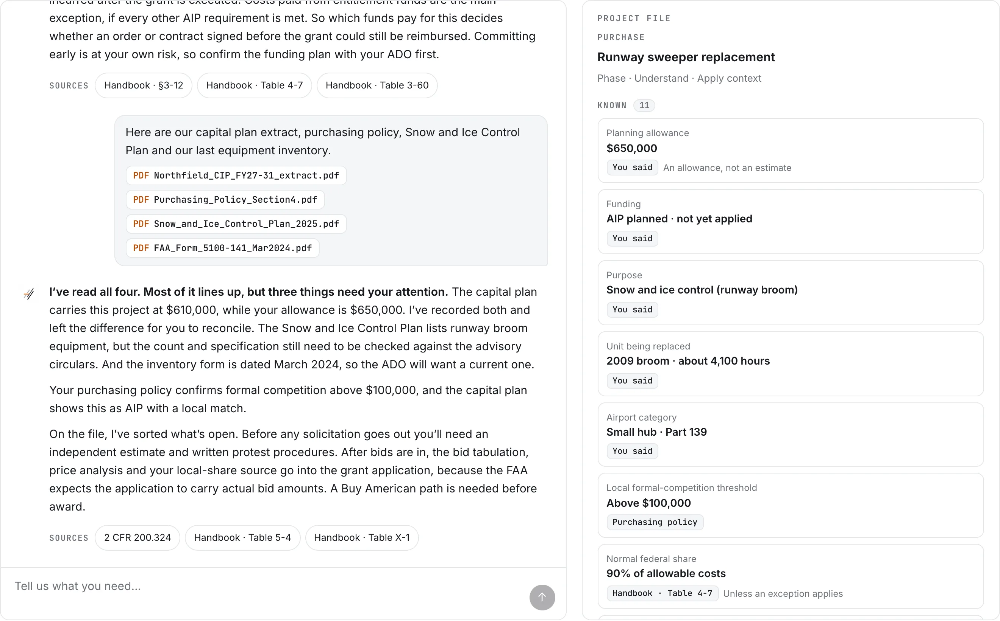

Know the path. Keep your airport project moving.
TarmacSync brings procurement intelligence to U.S. airports. Understand your buying options before the process begins.
Veteran-founded · Built by an Accredited Airport Executive.
Your airport’s context. A clearer path forward.
Bring your policies, capital plans, and project documents. TarmacSync connects them with applicable requirements and contract options to identify the likely buying path—and what to do next.
Watch the demo
How the pieces become a buying path.
From what you provide to what your team reviews.
For this decision. And the next.
Give today’s team clarity and tomorrow’s team a record to build on.
Know the path
See the likely buying path—and what could change it.
What informs the path
- Airport policy and approval authority
- Funding and grant terms
- Applicable federal and state sources
- Existing contracts and agreements
Show the reasoning
Keep the sources, assumptions, and open questions connected.
What stays visible
- Confirmed facts and working assumptions
- Sources and open questions
- Required reviews and approvals
Preserve the expertise
Give the next team a starting point, not another blank page.
What the airport keeps
- Working path and alternatives considered
- Project decisions and source history
- Reusable lessons for future projects
Between projects: keeping the path current
Capital projects
TarmacSync keeps reviewed ACIP/CIP projects alongside funding and procurement activity, so the next project can begin with its existing context.
New FAA awards
Selected FAA funding information relevant to your projects.
Regulatory intelligence
Selected official guidance that could change the path.
From the first question to project closeout.
Today, start with the buying decision. Our long-term vision is to keep its context connected through project closeout.
Turn sound on for the full experience.
"The question was never what to buy. It was always how to buy it."
I built TarmacSync after watching airport teams rebuild the same answer: policy, funding terms, contracts, and project files every time a new purchase came up. The work mattered. Rebuilding it from scratch was the part we could change.
How it fits your airport.
What is TarmacSync?
TarmacSync is a procurement intelligence platform for U.S. airport operators. It helps teams connect purchase needs with funding, procurement, approval, contract, source, and next-action context before the process begins.
Who is TarmacSync for?
TarmacSync is designed for airport directors, administration and finance teams, procurement and grants staff, capital-project leaders, and consultants supporting U.S. airport operators.
What would our airport need to provide?
An initial conversation requires no preparation. If an airport proceeds, setup is guided around the documents, policy, thresholds, and project information it already has. Do not provide SSI, CUI, classified, or protected security information.
Does TarmacSync replace our existing systems or reviews?
No. TarmacSync is an intelligence layer that works alongside your existing procurement, ERP, grant, and records systems and reviews. Airport professionals retain approval, judgment, and accountability.
How does TarmacSync use sources and evidence?
TarmacSync connects purchase decisions with relevant official and airport-specific sources. It organizes evidence to explain a working path; it does not invent regulatory text or replace the airport’s applicable authority and review.
Does our IT department need to be involved?
Not for the initial conversation. Before workspace access or airport documents are introduced, an airport may require IT, security, privacy, or procurement review. TarmacSync will provide available security and data-handling information for that review.
How is airport information handled?
Airport information is not used to train public AI models. Approved providers may process information only to operate the service under disclosed terms. Additional data-handling expectations will be documented before an airport provides program materials.
What happens if we want to evaluate TarmacSync?
Evaluation is a separate, explicitly agreed step around a real airport project. TarmacSync confirms the scope, participants, information needed, and expected time before an airport provides program materials.
Keep the context. Move the project forward.
The Airport Infrastructure Delivery Gap
A source-linked guide to where airport projects lose context—and what to carry into the next handoff.